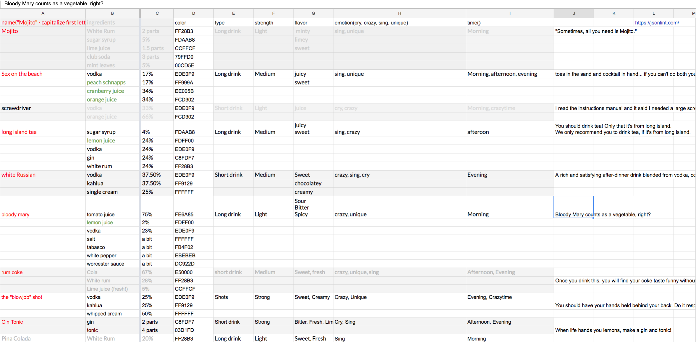

Cocktail Party is an interactive cocktail recommendation system for first-time drinkers.
About the project Duration: 8 weeks Team size: 3 Reaches: 30+ users
Motivation
Although there are overflowing data about different types of cocktails, the way to find the perfect fit is fairly difficult, due to its lack of connection between name and taste. This is so apparent especially if you are new to the world of the cocktail.
Goals
We wanted to give users some meaningful ways to sort and find the cocktails they want. We drew references from ingredients (citrusy or creamy?), time of the day (afternoon or midnight?), and emotions(smile or crazy?). Then, we made a dataset to record data for each cocktail.

Sources: Local bar menus, ingredient lists in Wikipedia, and our drinker friends🍹
Iterations
From the paper sketches to the code, we visualized the four criteria (time, emotion, taste, ingredients). Users can either directly pick a cocktail from the home page, or they can answer a few questions to our recommendation engine. After selecting a cocktail, they see a pie chart revealing its ingredients with the cocktail's name.